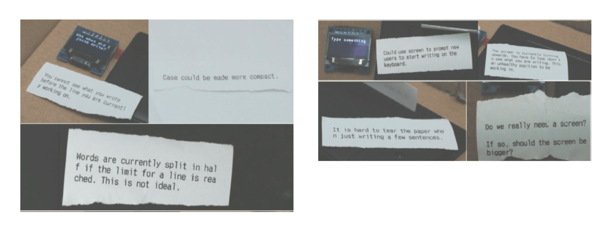

Pointers explored on this site include the portable typewriter and the midi plotter.
Pointers are early prototypes that point in the way they work towards a possible property of the medium. They point towards this property not only for others, but also for the research itself. They might see something through the pointer that she has not been able to see before.
Götz Bachmann - Terms of Media
entries leading here ・ intermediate representations , portable typewriter
linked entries ⤳
I was frustrated with how current publishing processes force you to spend hours alone on the computer making layouts.
Inspiration by Robert Ochshorn's wonderful desert journalism project I wanted to respond to these frustrations by making printing available in spaces where it currently isn’t and by doing that move away from the extensive and bulky infrastructure which is typically needed to create a printed page.
This was a personal project. To fulfil my vision, I decided to make a portable, battery-operated receipt printer typewriter.
I acquired all the necessary components (Arduino, battery, receipt printer, keyboard) and wrote the Arduino code needed for the different parts to interface with each other. I then went out to test the functioning prototype. It quickly became clear that the small portable typewriter and access to immediate printing enables a lot of activities which traditional publishing does.

Doing this project resulted in deeper appreciation of printing as a medium - in many ways it became a pointer towards a new media which could spring fourth from further exploring printing and portability. This is explored further in the printing process as time-based media.
Midi Plotter
A Rust program which makes it possible to visualise midi notes with the HP7440A pen plotter as they are received. This project grew out of my fascination with printing technologies and a desire to explore whether printing can be seen as a time-based media. I wrote a reflection on what it means for printing to be a time-based elsewhere on this site.
Once finished I had a few different people try out the program. One friend started playing Partita by Bach: above is the pen plotter visualisation of her performance alongside the traditional representation of the piece.
When you perform with the pen plotter it almost becomes a second performer as the rhytmns and sounds the plotter makes as it draws merges with the notes you play on your instrument: